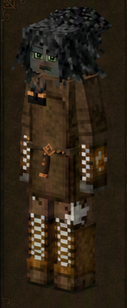
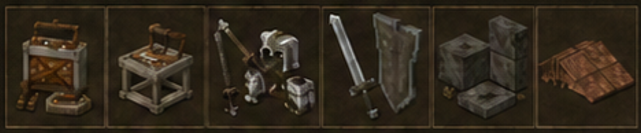

Guardia Negra
Blackguard · código oficial
blackguard · ficha 02/16
Rasgos: 7
Bonus: 7
Malus: 5
Recetas: 51

Resumen humano
combatiente-forjador. Sus números favorecen combate y metal, pero penalizan recolección y autosuficiencia.
Esta línea es interpretación funcional breve; lo importante son los números y recetas de abajo.
Bonus objetivos
- afectación de armadura a velocidad: **-20%** (valor interno `-0.2`)
- ahorro de durabilidad de martillo: **+75%** (valor interno `0.75`)
- daño causado global: **+20%** (valor interno `0.2`)
- daño recibido por fuego: **-80%** (valor interno `-0.8`)
- puede manipular objetos calientes: **activado (+1)** (valor interno `1`)
- velocidad al trabajar metal: **+100%** (valor interno `1`)
- vida máxima: **+20%** (valor interno `0.2`)
Malus objetivos
- daño contra humanoides: **-10%** (valor interno `-0.1`)
- drop de cultivos silvestres: **-25%** (valor interno `-0.25`)
- drop de forraje/recolección silvestre: **-25%** (valor interno `-0.25`)
- drop/rendimiento de animales: **-10%** (valor interno `-0.1`)
- velocidad al caminar: **-5%** (valor interno `-0.05`)
Rasgos oficiales y efectos reales
| Rasgo | Tipo | Datos objetivos |
|---|---|---|
Guerrerowarlord | positivo | daño causado global: +20% (interno 0.2)afectación de armadura a velocidad: -20% (interno -0.2)vida máxima: +20% (interno 0.2)velocidad al caminar: -5% (interno -0.05) |
Guardia Negrablackguard | positivo | sin atributos numéricos en traits.json; desbloqueo/rasgo de receta |
Despiadadomerciless | desbloqueo/vanilla | sin atributos numéricos en traits.json; desbloqueo/rasgo de receta |
Herreroblacksmith | positivo | ahorro de durabilidad de martillo: +75% (interno 0.75)velocidad al trabajar metal: +100% (interno 1) |
Termorresistenteheatproof | positivo | puede manipular objetos calientes: activado (+1) (interno 1)daño recibido por fuego: -80% (interno -0.8) |
Protegidosheltered | negativo | drop de forraje/recolección silvestre: -25% (interno -0.25)drop de cultivos silvestres: -25% (interno -0.25)drop/rendimiento de animales: -10% (interno -0.1) |
Juramentadooathsworn | negativo | daño contra humanoides: -10% (interno -0.1) |
Recetas / desbloqueos
43mesa normal
8estación
0compatibilidad
51salidas listadas
Categorías detectadas
Moldes y estampas de forja: 16Armaduras y piezas defensivas: 10Bloques metálicos: 10Cadenas: 7Tejados y piezas de cubierta: 7Trabajo de metal: 1
Ver salidas exactas de recetas de esta clase (51)
| Modo | Categoría legible | Resultado legible | Nombre ES |
|---|---|---|---|
| mesa de crafteo normal | Armaduras y piezas defensivas | Kit de reparación de armadura ×3 | — |
| mesa de crafteo normal | Armaduras y piezas defensivas | Armadura casco antigua guardia negra rota ×1 | — |
| mesa de crafteo normal | Armaduras y piezas defensivas | Armadura pechera antigua guardia negra rota ×1 | — |
| mesa de crafteo normal | Armaduras y piezas defensivas | Armadura grebas antigua guardia negra rota ×1 | — |
| mesa de crafteo normal | Armaduras y piezas defensivas | Armadura casco antigua forlorn rota ×1 | — |
| mesa de crafteo normal | Armaduras y piezas defensivas | Armadura pechera antigua forlorn rota ×1 | — |
| mesa de crafteo normal | Armaduras y piezas defensivas | Armadura grebas antigua forlorn rota ×1 | — |
| mesa de crafteo normal | Armaduras y piezas defensivas | Hoja forlorn iron ×1 | — |
| mesa de crafteo normal | Armaduras y piezas defensivas | Lanza genérica ornamentada de oro ×1 | — |
| mesa de crafteo normal | Armaduras y piezas defensivas | Lanza genérica ornamentada de plata ×1 | — |
| mesa de crafteo normal | Cadenas | Cadena de soporte doble ×64 | — |
| mesa de crafteo normal | Cadenas | Cadena de soporte cuádruple ×64 | — |
| mesa de crafteo normal | Cadenas | Cadena de soporte doble nueva ×64 | — |
| mesa de crafteo normal | Cadenas | Cadena de soporte cuádruple nueva ×64 | — |
| mesa de crafteo normal | Cadenas | Valla de hierro base este-oeste ×32 | — |
| mesa de crafteo normal | Cadenas | Valla de hierro parte superior este-oeste ×1 | — |
| mesa de crafteo normal | Cadenas | Valla de hierro base este-oeste ×1 | — |
| mesa de crafteo normal | Bloques metálicos | Bloque metálico nuevo remachado metal ×1 | — |
| mesa de crafteo normal | Bloques metálicos | Bloque metálico corroído remachado metal ×1 | — |
| mesa de crafteo normal | Bloques metálicos | Bloque metálico nuevo liso metal ×1 | — |
| mesa de crafteo normal | Bloques metálicos | Bloque metálico nuevo remachado metal ×1 | — |
| mesa de crafteo normal | Bloques metálicos | Bloque metálico corroído liso metal ×1 | — |
| mesa de crafteo normal | Bloques metálicos | Bloque metálico corroído lámina metal ×1 | — |
| mesa de crafteo normal | Bloques metálicos | Viga de soporte metal deslustrado metal ×16 | — |
| mesa de crafteo normal | Bloques metálicos | Lámina de metal metal abajo ×1 | — |
| mesa de crafteo normal | Bloques metálicos | Bloque metálico corroído liso metal ×1 | — |
| mesa de crafteo normal | Bloques metálicos | Bloque metálico corroído liso rusty iron ×1 | — |
| mesa de crafteo normal | Trabajo de metal | Toolrepairkit ×1 | — |
| mesa de crafteo normal | Tejados y piezas de cubierta | Tejado inclinado copper este libre ×16 | — |
| mesa de crafteo normal | Tejados y piezas de cubierta | Cumbrera de tejado copper norte-sur libre ×16 | — |
| mesa de crafteo normal | Tejados y piezas de cubierta | Punta de tejado copper libre ×16 | — |
| mesa de crafteo normal | Tejados y piezas de cubierta | Esquina interior de tejado copper este libre ×16 | — |
| mesa de crafteo normal | Tejados y piezas de cubierta | Esquina exterior de tejado copper este libre ×16 | — |
| mesa de crafteo normal | Tejados y piezas de cubierta | Beam ridge copper libre ×16 | — |
| mesa de crafteo normal | Tejados y piezas de cubierta | Beam plane copper libre ×16 | — |
| mesa de crafteo normal | Moldes y estampas de forja | Ingot metal ×1 | — |
| mesa de crafteo normal | Moldes y estampas de forja | Metalplate metal ×1 | — |
| mesa de crafteo normal | Moldes y estampas de forja | Metalchain metal ×1 | — |
| mesa de crafteo normal | Moldes y estampas de forja | Metallamellae metal ×2 | — |
| mesa de crafteo normal | Moldes y estampas de forja | Metalscale metal ×2 | — |
| mesa de crafteo normal | Moldes y estampas de forja | Rod metal ×1 | — |
| mesa de crafteo normal | Moldes y estampas de forja | Metalnailsandstrips metal ×4 | — |
| mesa de crafteo normal | Moldes y estampas de forja | Arrowhead metal ×9 | — |
| estación especial | Moldes y estampas de forja | Ingot metal ×1 | — |
| estación especial | Moldes y estampas de forja | Rod metal ×1 | — |
| estación especial | Moldes y estampas de forja | Metalnailsandstrips metal ×4 | — |
| estación especial | Moldes y estampas de forja | Arrowhead metal ×9 | — |
| estación especial | Moldes y estampas de forja | Metalscale metal ×1 | — |
| estación especial | Moldes y estampas de forja | Metalplate metal ×1 | — |
| estación especial | Moldes y estampas de forja | Metalchain metal ×1 | — |
| estación especial | Moldes y estampas de forja | Metallamellae metal ×1 | — |
Archivos de esta ficha
Markdown corregido · PNG corregido · Fuente objetiva original si existe
{kind=link}